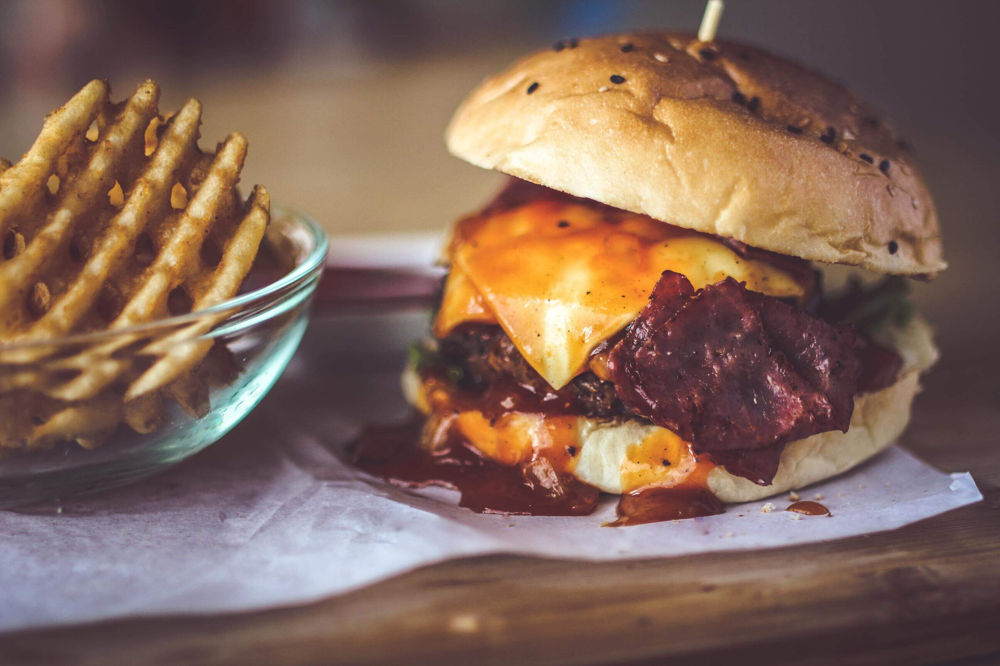
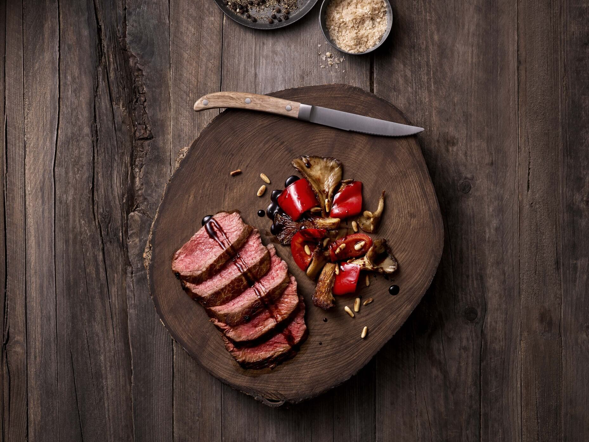
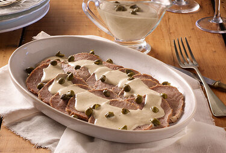

Somos una comunidad dedicada al buen comer, es por eso que hemos creado una pagina con el proposito de poder compartir las mejores recetas de comida y asi las prepares en casa con tus seres queridos.
Puro Sabor
Bienvenidos
"Un gran artista si puede provenir de cualquier lugar"
Haz click aqui para enviarnos tu recetaQueremos lograr que cada uno de ustedes se motive a ver nuestro contenido. Quizas puedas crear un ¡Wao! en tu proxima cena ¿Que esperas para ver nuestras recetas?
Nuestras recetas





¿Como influyen las emociones al cocinar?
Desde un punto de vista más poético o metafórico, los alimentos que cocinamos son expresión de nuestro interior. Cuando guisamos para alguien, le cedemos una parte de nuestro cariño y de los sentimientos que albergamos. Y es muy difícil no dejarse llevar por la pasión de cocinar.